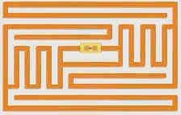
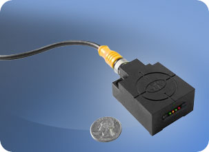

Υλοποίηση πληροφοριακών συστημάτων — Απαλλακτική Εργασία
Υλοποίηση συστήματος δανεισμού λογισμικού με χρήση ετικετών RFID
Η τεχνολογία αναγνώρισης με ραδιοκύμματα (RadioFrequency IDentification - RFID)
βασίζεται στην αποθήκευση και την απομακρυσμένη ανάγνωση δεδομένων από ειδικές
συσκευές που ονομάζονται ετικέττες RFID. Οι ετικέττες RFID είναι πολύ απλά και φθηνά
κυκλώματα στα οποία μπορεί κάποιος με μια συσκευή εγγραφής να εγγράψει κάποια απλή
πληροφορία, για παράδειγμα ένα σειριακό αριθμό. Όταν η ετικέττα RFID διεγερθεί από
ένα κατάλληλο ηλεκτρομαγνητικό πεδίο, που δημιουργείται από κάποια συσκευή ανάγνωσης,
εκπέμπει την αποθηκευμέμη πληροφορία.

Λόγω του σχετικά χαμηλού κόστους και της δυνατότητας τους να διαβαστούν χωρίς να
υπάρχει οπτική επαφή, οι ετικέττες RFID χρησιμοποιούνται ευρέως σε συστήματα οργάνωσης
αποθηκών, ως αντικλεπτική μέθοδος για μικρά αλλά ακριβά αντικείμενα (πχ η εταιρεία
Gillete έχει υιοθετήσει την συγκεκριμένη τεχνολογία για τα ξυραφάκια Mach3), ακόμη
και ως μέσο παρακολούθησης των κινήσεων ομάδων πτηνών.
Τι θα βρείτε
- EMS-RFID HF-0405 (Συσκευή για την αυτόματη ανάγνωση και εγγραφή πληροφορίας
με ασύρματο τρόπο σε RF-tags) 
- Κιτ ανάπτυξης λογισμικού (Software Development Kit - SDK) σε περιβάλλον .NET
για τον συγκεκριμένο αναγνώστη ετικετών RFID
- CD λογισμικού στο εκπαιδευτικό εργαστήριο πληροφορικής 2
- Όλο το απαραίτητο λογισμικό για την ανάπτυξη της εφαρμογής
Τι θα φτιάξετε
- Γραφική διεπαφή χρήστη για δανεισμό/επιστροφή λογισμικού για το εργαστήριο
- Εγκατάσταση και παραγωγική δοκιμή της εφαρμογής που θα υλοποιηθεί
- Σύνδεση της εφαρμογής με το υπάρχον σύστημα δανεισμού (επικοινωνία με την
βάση δεδομένων)
Πως θα το φτιάξετε
- Εγκατάσταση και πειραματική χρήση της συσκευής ανάγνωσης RFID σε υπολογιστή
του εργαστηρίου
- Μελέτη του υπάρχοντος συστήματος δανεισμού λογισμικού σε συνεργασία με το
προσωπικό του εργαστηρίου
- Σχεδιασμός και ανάπτυξη της προτεινόμενης εφαρμογής
- Πειραματική εγκατάστασή της στο εργαστήριο
Τι πρέπει να ξέρετε
- C#
- Windows forms
- Γενικά, την πλατφόρμα .ΝΕΤ
Τι θα μάθετε
- Χρήση της τεχνολογίας RFID
- Εμβάθυνση στην ανάπτυξη εφαρμογών με τη χρήση μοντέρνων τεχνικών
τεχνολογίας λογισμικού
Υπεύθυνος εργασίας
- Όνομα
- Γιώργος Γούσιος
- Email
- gousiosg@aueb.gr
- Ιστοσελίδα
- http://istlab.dmst.aueb.gr/~george
Παραπομπές στο διαδίκτυο